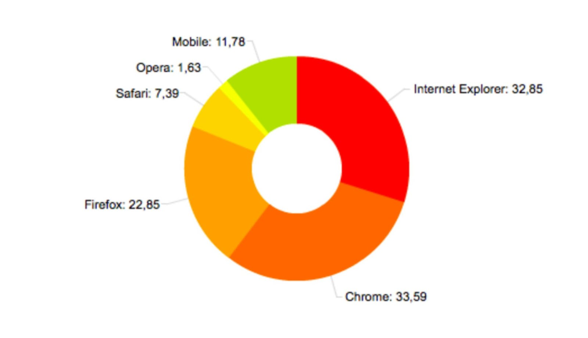
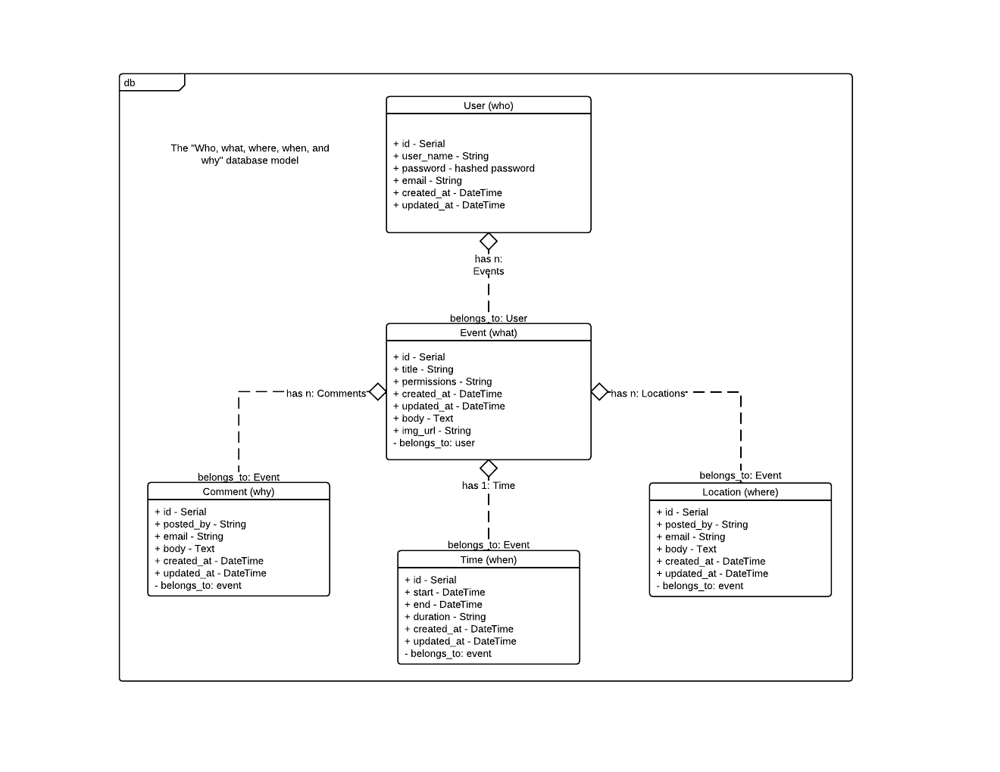

Project Proposal
CSCI 430 - Software Engineering
Patrick Edelman
Jon Rose
Jordan Dunn
Hadi Hamoud
Bianca Berg
A Better Approach to the Online Calendar
For this project we came up with a unique take on the calendar. With today’s use of a calendar, the people who gain the most use are the people who are adding things like meetings, school schedules, and local events or conferences. We have worked out a system that will provide people with an up to date listing of many different categories of events that are occurring each day. With this system, the end user will be able to discover new events and more importantly, remember, the ones that are taking place each day. This will be a great tool for companies to advertise their events, and for users to find new things around them more easily.
Some ideas we had on actual events are things like concert registration dates, election dates, conference dates, hackathons, tv show dates, etc. Some events then will be more or less relevant to a user depending on their geographical location, or more specifically, their physical proximity to the event itself, local concerts for example, while other events might be relevant to a user independent of their location. The types of events which could potentially be represented is unlimited. With the right set of functions, users will be drawn to a service that helps them stay on top of the things that matter in their lives, both professional and recreational. This will also serve as a tool to help people stay more organized by introducing them to the benefits of keeping schedules organized with a calendar. We plan on initially linking our service with Google’s calendar service. We believe the ease of their product and API will best serve our project. The eventual goal is to have this service work more seamlessly with other online calendar providers (Yahoo, Outlook, iCal, etc.).
We plan on implementing this system by first building an API bridge between Google’s calendar API and our event database. With this API bridge, we will allow ourselves to separate the site from the backend, allow us to grow the service more effectively if things were to take off and to ensure proper security for users and our data. Our server will just respond to requests in a RESTful manner and provide a well structured Json response. We could use our API on native apps, provide companies with a programmatic way to enter events, and to add features more quickly across a large variety of platforms. It will also allow for some interesting integrations with other calendar services.
Once we have fulled built out or API, we will start by building a HTML5 mobile web app that will employ a responsive design to target all major platforms. The advantage of the responsive design is that regardless of the device’s screen size and feature set, we can appropriately serve content and design. Our main platforms will be IE8+, Firefox 3+, Chrome, Opera, iPhone, Android, and Safari. With the exception of IE, these browsers are all packed with great modern web features and will cover a majority of the browser market share.

The different programming languages we plan on implementing are as follows. We plan on implement the standard front-end development stack with HTML5, CSS3, Javascript, jQuery. We also plan on using Twitter Bootstrap to help handle the overall structure and simple styling. With this site we will be able to use Ajax to make server calls and we’ll get back a Json response from our backend server containing the necessary event information.
The backend server will consist of a Ruby web application built with Sinatra and a postgres SQL database built with DataMapper. Since we have decided to use git to manage version control, our project is ideal to host on Heroku, “the leading open language cloud application platform.” Heroku has a really powerful git integration for managing development and production environments as well as simple and intuitive deployment methods. By using git for managing project versions and Heroku to host and manage environments we will have a robust test framework from the beginning. Our database will be paired with a simple event management API that will handle all event and user creation and queries. Events will consist of all “who, what, where, when, why” data for a given event.

The backend API will have many features for searches based on location, and other meta data beyond title and tag data. Not only will this approach allow both the front and back end to stay lean and modular but it will also allow for powerful ways to create and consume event data. Considering that a major issue for any new social networking, or content related site is a lack of initial content, our backend API will work well with web scraping programs we will build. The Enlive (https://github.com/cgrand/enlive) library is a powerful Clojure web scrapping tool that we will use to aggregate and create new event data. Combined with an intuitive set of front end tools for creating user events, the project should have useful test data quickly.
If we can effectively execute on our plan, we plan on implementing a large base of features. One idea we had was to allow user to select an area on a map that will show them upcoming events around them. We are considering allowing a user to also draw their general, habitual territory/domain into a map so that events occurring within an area more complex than simply a circular area centered on their current position will produce relevant event results. We believe that this might better provide the user with events more fitting with their lives - as we tend to not travel uniformly within a circular area, but rather carve out a more unique area of travel. With this system we need to properly implement a geolocation system, and have a good location list stored in our database. Another feature that could be implemented is the ability to create events and share them with a certain group of friends. This would be a great feature that would encourage our users to sync their social services and to create more events, which would grow our viral reach and our service. If we treated each public event as a standalone web page, users could also share minified links on services like facebook and twitter to help get users to sign up for events. This would also be great for business as it would allow them to easily share a link to an event in an email.
We might be able create a feature which allows the user to receive some events to their calendar temporarily as their location changes, specifically events which they would not care to have added to their calendar generally, events which they might not care to plan for but are relevant to their interests and fall within what they enjoy doing more spontaneously. In this way a user might have had an event added to their calendar in advance, something which they might for example have travelled to a neighboring city for, and after the event they might perhaps want to do something unplanned before returning home. In such an event they could look on their calendar and see a list of events relevant to their interests occurring nearby which they would not have gone out of their way to attend, but that now being close by to would be inclined to attend or participate in. This however requires further investigation.
On top of a rich feature set, we plan on employing good design fundamentals to ensure a rich user experience for our users. A major aspect in the overall feel of the service will be based off performance, so building an efficient web page will be of the utmost importance in the design process. Design is an important aspect in today’s world of web applications, so mocking up designs will be a valuable assets to the app building process. While the specifics of the design yet to be worked out, we generally agree that it should be kept coherent and concise, uncluttered and balanced.